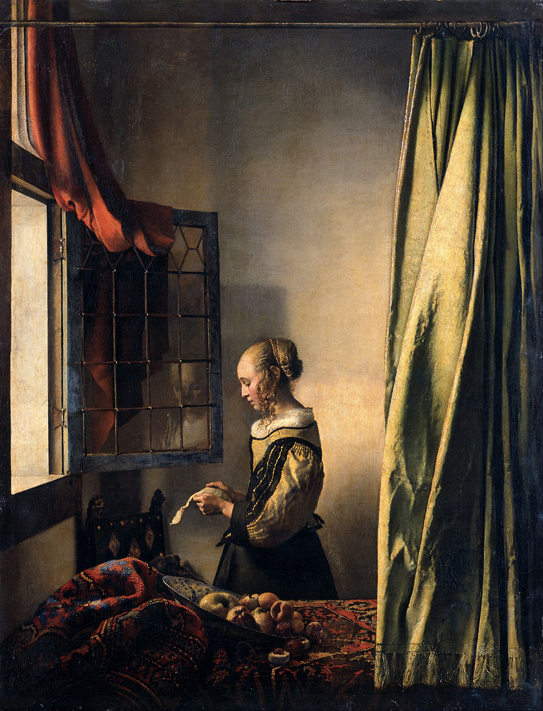

<head>
<meta charset="UTF-8" />
<meta name="keywords" content="drawing, painting" />
<meta name="description" content="drawings by Sunjy" />
<title>Sunjy</title>
<link rel="shortcut icon" type="image/x-icon" href="../../mImages/mCommon/favicon.ico" media="screen" />
<link rel="stylesheet" type="text/css" href="../../mCsses/mCommon/mCssA.css" />
<link rel="stylesheet" type="text/css" href="../../mCsses/mCommon/mCssB.css" />
<link rel="stylesheet" type="text/css" href="../../mCsses/mCommon/mCssC.css" />
<link rel="stylesheet" type="text/css" href="../../mCsses/mCommon/mCssD.css" />
<link rel="stylesheet" type="text/css" href="../../mCsses/mContent/mCssA.css" />
<link rel="stylesheet" type="text/css" href="../../mCsses/mContent/mCssB.css" />
<link rel="stylesheet" type="text/css" href="../../mCsses/mContent/mCssC.css" />
<link rel="stylesheet" type="text/css" href="../../mCsses/mContent/mCssD.css" />
</head>
<script type="text/javascript" src="../../mScripts/mContent/mContentAA.js" /></script>
<script type="text/javascript" src="../../mScripts/mContent/mContentAB.js" /></script>
<script type="text/javascript" src="../../mScripts/mContent/mContentAC.js" /></script>
<script type="text/javascript" src="../../mScripts/mContent/mContentAD.js" /></script>
<script type="text/javascript"></script> 
<script type="text/javascript">
document.write('<div class="mImgAbsolute"></div>');
/*
document.write('<p class="mFontSizeBColor" />From a white paper...</p>');
document.write('<table class="center"><tr><td>');
document.write('');
document.write('</td></tr></table>');
*/
</script>


<script type="text/javascript">
document.write('<p class="mFontSizeBColor" />Girl Reading a Letter at an Open Window</p>');
document.write('<p class="mFontSizeSColor" />“Girl Reading a Letter at an Open Window” by Johannes Vermeer depicts a young blonde girl standing in the light of an open window, reading a letter. A red drapery hangs over the top of the window, which has opened inward and which, in its lower right quadrant, reflects the girl’s mirror image.<br><br>A tasseled ochre drapery in the foreground right, partially closed, covers part of the room in which she stands. Highlighted by the light from the window are the fruit in a tilted bowl, the luxurious carpet, and the peach, which is cut into half.<br><br>Scientific test and x-rays of the canvas showed that at one point, Vermeer had featured a naked Cupid on the wall in this painting. For whatever reason, somebody in the 18th century painted over the cupid image with the empty blank wall featured in this image of the painting.<br><br>The museum has restored Vermeer’s original and removed the overpainted layer, which can be seen in the above image. Today, the original Cupid can now be seen in this painting at the museum. Vermeer had depicted a standing Cupid holding a raised bow with his right hand and lifting his left arm. The painting can now again be seen as it left the artist’s studio.<br><br>Art historians suggest that the fruit in a tilted bowl and the peach, which is cut in half, revealing its pit, symbolize an extramarital relationship and that the letter is a love letter. Now that the cupid image has been revealed, is this theory confirmed? Or is she sad because the relationship has ended?<br><br>Art as a Casualty of War<br><br>“Girl Reading a Letter at an Open Window” was among the paintings rescued from destruction during the bombing of Dresden in World War II. When World War II was imminent in 1938, the museum was closed, and the painting was stored, with other works of art, in an underground tunnel in Saxony. Discovered by the Red Army in 1945, they were taken to Russia. After the death of Joseph Stalin, the Soviets in 1955 returned the surviving art to Germany.<br><br>Most of the essential paintings from the Old Masters Gallery survived this period, but the losses were significant. Over 200 pictures had been destroyed, and some 450 are still missing today.<br><br>Dutch Golden Age<br><br>The Dutch Golden Age spanned roughly the 17th century. The Dutch Republic was the most prosperous nation in Europe and led European trade, science, and art. The northern Netherlandish provinces that made up the new state had traditionally been less important artistic centers than cities in Flanders in the south. The upheavals and large-scale transfers of the population due to the Eighty Years’ War and the break with the old monarchist and Catholic cultural traditions, meant that Dutch art had to reinvent itself.<br><br>The painting of religious subjects declined sharply, but a significant new market for all kinds of secular subjects grew up. Vermeer’s subjects typify this exploration of new subject areas.<br></p>');
document.write('<table class="center" /><tr><td>');
document.write('<br>A tasseled ochre drapery in the foreground right, partially closed, covers part of the room in which she stands. Highlighted by the light from the window are the fruit in a tilted bowl, the luxurious carpet, and the peach, which is cut into half.<br><br>Scientific test and x-rays of the canvas showed that at one point, Vermeer had featured a naked Cupid on the wall in this painting. For whatever reason, somebody in the 18th century painted over the cupid image with the empty blank wall featured in this image of the painting.<br><br>The museum has restored Vermeer’s original and removed the overpainted layer, which can be seen in the above image. Today, the original Cupid can now be seen in this painting at the museum. Vermeer had depicted a standing Cupid holding a raised bow with his right hand and lifting his left arm. The painting can now again be seen as it left the artist’s studio.<br><br>Art historians suggest that the fruit in a tilted bowl and the peach, which is cut in half, revealing its pit, symbolize an extramarital relationship and that the letter is a love letter. Now that the cupid image has been revealed, is this theory confirmed? Or is she sad because the relationship has ended?<br><br>Art as a Casualty of War<br><br>“Girl Reading a Letter at an Open Window” was among the paintings rescued from destruction during the bombing of Dresden in World War II. When World War II was imminent in 1938, the museum was closed, and the painting was stored, with other works of art, in an underground tunnel in Saxony. Discovered by the Red Army in 1945, they were taken to Russia. After the death of Joseph Stalin, the Soviets in 1955 returned the surviving art to Germany.<br><br>Most of the essential paintings from the Old Masters Gallery survived this period, but the losses were significant. Over 200 pictures had been destroyed, and some 450 are still missing today.<br><br>Dutch Golden Age<br><br>The Dutch Golden Age spanned roughly the 17th century. The Dutch Republic was the most prosperous nation in Europe and led European trade, science, and art. The northern Netherlandish provinces that made up the new state had traditionally been less important artistic centers than cities in Flanders in the south. The upheavals and large-scale transfers of the population due to the Eighty Years’ War and the break with the old monarchist and Catholic cultural traditions, meant that Dutch art had to reinvent itself.<br><br>The painting of religious subjects declined sharply, but a significant new market for all kinds of secular subjects grew up. Vermeer’s subjects typify this exploration of new subject areas.<br>" />');
document.write('</td></tr></table>');
</script>


